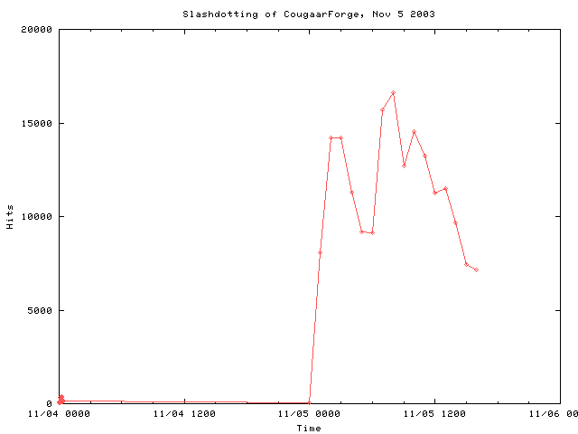
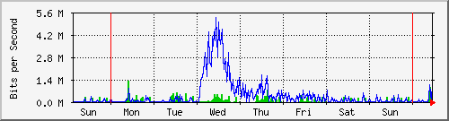
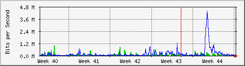
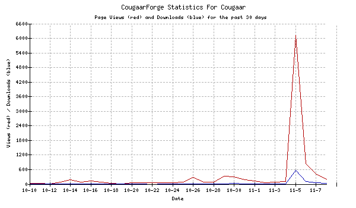

Here are some notes on the Slashdotting of CougaarForge that took place Nov 05, 2003.
At about 1:40 AM EST November 5, 2003, a story about CougaarForge (submitted by the ever-eloquent Aaron Helsinger) was posted to the front page of Slashdot. Below is a chart of the results - the hits for each hour from Nov 4 - Nov 6:


Now, the graph for the entire month:

And finally, the big day itself:

Misc notes:
max_connections, shared_buffers, and sort_mem, restarted the database, and all was well. Sigh. Learn something new every day.
Connections:
Service cvspserver:
203.11.83.2: 21 Time(s)
213.23.64.82: 27 Time(s)
149.2.141.4: 22 Time(s)
152.163.190.1: 37 Time(s)
213.244.14.10: 6 Time(s)
81.50.63.163: 1 Time(s)
195.38.5.161: 11 Time(s)
12.248.129.117: 4 Time(s)
4.22.165.34: 2 Time(s)